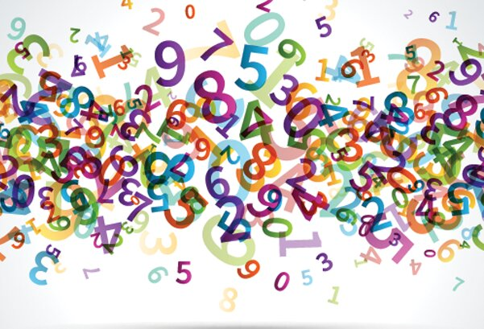

Introducción

Por medio de este juego interactivo queremos demostrar algunos aspectos positivos que necesitamos en lo que viene siendo un juego para una población diversa, algunos de estos aspectos nos ayudan en la agilidad mental, social y física, las cuales nos ayudan a reforzar las habilidades cognitivas.